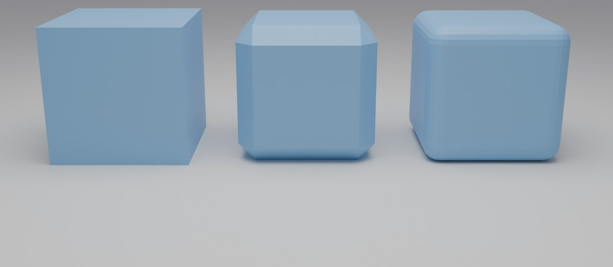

Bonus lesson
The Bevel Modifier
Perfectly sharp edges almost never exist in the real world, and they look wrong in renders: they catch no light, so objects read as flat computer graphics. The Bevel modifier cuts or rounds the edges of your mesh, and it does it non-destructively, as a modifier alternative to the Bevel tool you met in Edit Mode.
1. Width and Segments
Two settings decide most of the look. Width is the size of the bevel effect; the manual explains that how it is measured depends on the Width Type, and by default it is an Offset, the distance from the new edge to the original. Segments is the number of edge loops added along the bevel's face. One segment gives a flat chamfer; three or more give a smooth round.

2. Add it
Select your object, open the Modifiers tab as in Lesson 7, and add Bevel from the Generate group. Start with a small width such as 0.05 to 0.25 and raise Segments to 3 or 5. The Affect option at the top defaults to Edges, which bevels edges and creates intersections at vertices; the Vertices option bevels only the areas near vertices and leaves edges unchanged.
3. Useful options
Limit Method controls where the bevel applies. The default None bevels every edge. Angle bevels only edges whose adjacent faces meet sharply enough, which the manual describes as a way to bevel the sharp edges of an object without touching its smooth surfaces; that is usually what you want on a model that mixes flat and curved parts. Clamp Overlap, on by default, limits each bevel's width so neighboring bevels cannot overlap and break the mesh. Under Shading, Harden Normals keeps the big faces flat while the bevel faces shade smoothly into them; the manual notes it needs a custom split normals attribute, which Blender creates for you if the mesh does not have one.
Read the manual page on the Bevel modifier.
Exercise
Add a cube and give it a Bevel modifier with width 0.1 and 3 segments. Shade it smooth as in the Shade Smooth bonus lesson, then turn on Harden Normals and compare: the faces stay flat and only the edges shine. Try Limit Method set to Angle on a model you made earlier, such as the mug, and lower the angle until only the sharpest edges are beveled.